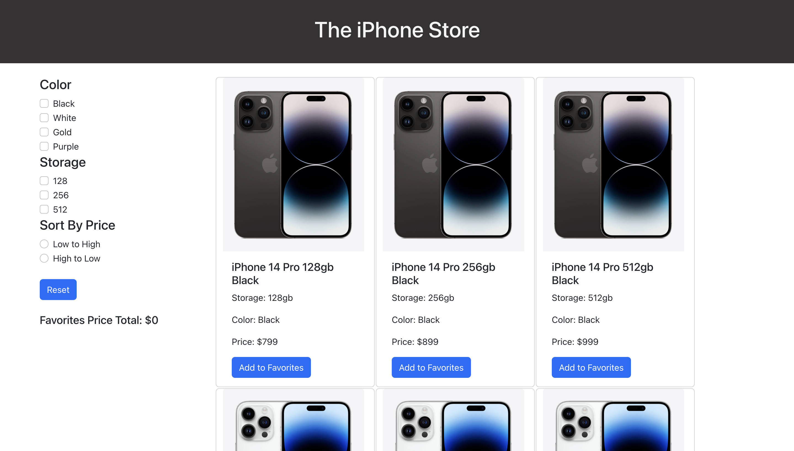

This is React based webpage which is a catalog for the new iPhone 14 pros. This webpage is a list-based interface
that allows users to add or remove various iPhone configurations to their favorites list and aggregates them to
to provide total amount of all variants in the favorites list. There is also a filtering and sorting functionality
to allow user to control what configuration of iPhones they want to see.
More about the Application
This website consists of 12 different variants of iPhone 14 pros which are displayed in list-based format
and user can add these iPhones
to their favorites list. There are 3 storage options to choose from (128gb, 256gb, 512gb) and
4 different color options (Black, White, Gold, Purple). There is a button which allows the user
to add or remove that specific variant of iPhone to their favorites list. Adding to this list helps
the user understand the total amount the user might have to pay for all of the products in the favorites
list. There is a filter menu which enables users to filter products by storage and color options.
There is also a sorting feature to sort the iPhones by price.
Technical Details
The page is divided into three components: Filter, Product and ProductList.
Product component takes care of the structing of information of a variant of an iPhone and
this is used by the ProductList which also handles the functionality of the favorites button.
The Filter component consist of the filtering activites and options that are available
(filter by storage, filter by color, sort by price), the Reset facility and also displays the
total price for all the items in favorites list. I used the concept of destructing and I destructured the
properties coming into our component into specific variables. State changes are primarily triggered on two
occasions by the user. The first one is tracking the state of the particular iphone variant to check if
it is being added or removed from the favorites list. The second one is tracking the state of all the
filter options available to the user to produce intended results.
This is how the end product looks like:

Usability Principles Considered
- The page is effective (reaches the goal) and efficient (reaches the goal quickly).
- User has the power to control what they want to see.
- Terms, icons, and layouts all follow consistency and fit in together.
- Design and layout is comprehensible at first sight.
- User has the ability to complete their task and does not get lost, they have all the information they need to know at any time, in which part of the application they are in, which actions can be executed and how they are triggered.
- Web page reacts to the user’s input at any time and informs them about events actively.
- All the components work as per instructions and page does not break